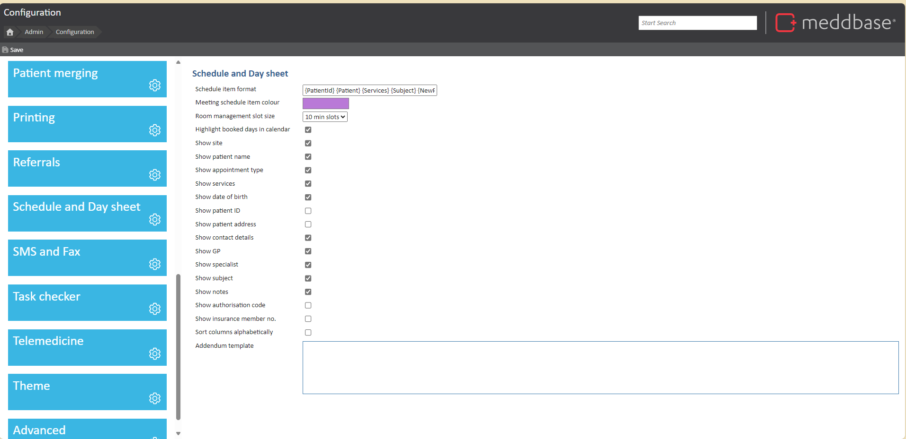
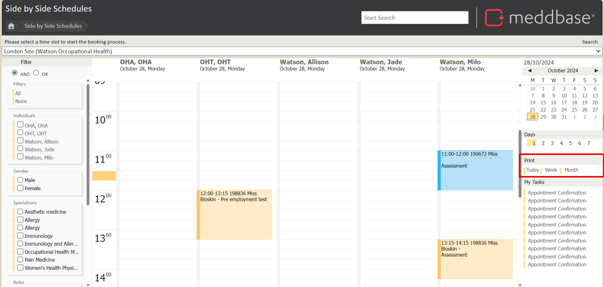
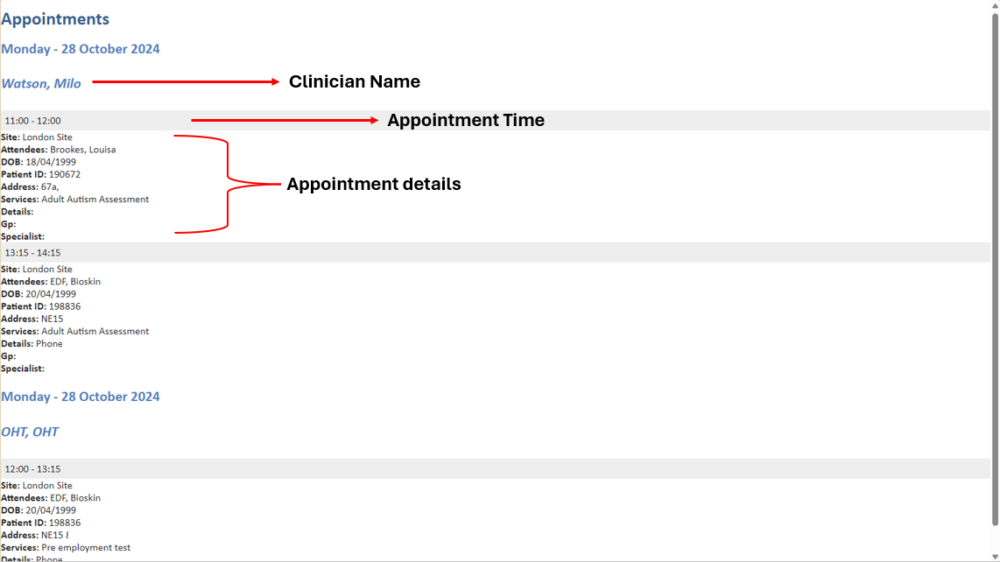
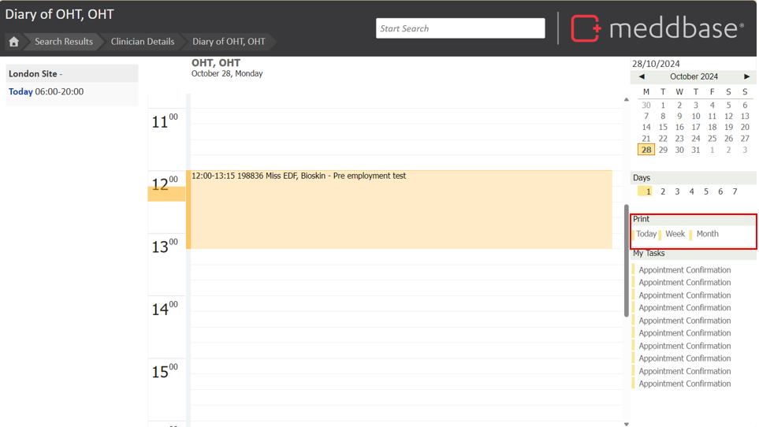

In day-to-day operations, the side-by-side/Clinician schedules view in our system offers a consolidated, visual overview of all appointments, making it easy to manage appointments.
Printing this schedule, or day sheet from this view allows users to have a physical reference, which is particularly helpful for teams coordinating with clients or handling high volumes of appointments.
The purpose of this article is to guide you through the steps to configure and print the Clinician Schedules. This article is broken down into the following sections:
To configure the day sheet printing, follow these steps to ensure that all relevant information displays as needed on the printout:

To print your clinic's schedule, navigate to the Side-by-Side Schedule/Clinician Schedule page.
On the right side, click Print and select your preferred option:
Please note: Only booked appointments will be shown in the print view.

Once you have selected your print view, a new tab will open with the schedule where you will be able to print the page using your device controls.
The page will be displayed in the sections below:

To print an individual clinician's diary, navigate to their diary from the Clinicians record page. Find Clinician > Select Clinician > Diary.
On the right side, click Print and select your preferred option for just this clinicians appointments:
